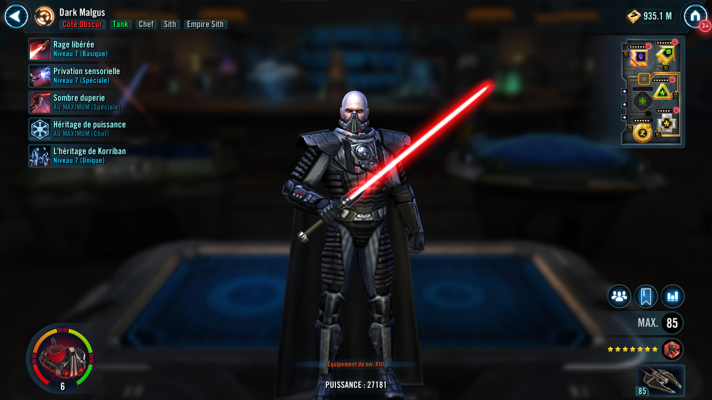
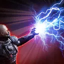

Darth Malgus
Legendary Sith Lord who causes doubt among his foes and heralds the return of the Sith Empire
Legendary Sith Lord who causes doubt among his foes and heralds the return of the Sith Empire

* Deal Physical damage to target enemy with a 50% chance to attack again, doubled if the target is a Jedi. On the second attack, Darth Malgus gains 20% Max Health (stacking, max 100%) until the end of the encounter. These attacks can't be countered or evaded. Sith Empire allies gain Critical Damage Up for 2 turns.

Deal Physical damage to target enemy and inflict Blind and Shock for 2 turns. If the target was already Shocked, Shock all enemies for 2 turns and inflict Ability Block on the target enemy for 2 turns. Darth Malgus Taunts for 2 turns.
Omicron Boost : While in Grand Arenas: Debuffs inflicted by this ability can't be resisted, and Sith Empire allies gain Critical Chance Up for 2 turns. If the target was already Shocked, deal true damage to all other enemies and Darth Malgus gains 50% Turn Meter.
Deal true damage to target enemy equal to 40% of Darth Malgus' Max Health and inflict Doubt on them for 2 turns. If Darth Malgus is in the Leader slot and not the ally slot, this Doubt can't be resisted. Increase target enemy's cooldowns by 1, which can't be resisted. Darth Malgus gains Protection Up (20%) and additional Protection Up (5%, stacking) for each debuff on each ally for 2 turns.
Doubt: Can't gain bonus Turn Meter or buffs or recover Protection
Sith Empire allies are immune to Turn Meter reduction. For each Sith Empire ally at the start of battle (excluding summoned allies), Sith Empire allies have +10% Critical Chance and Max Health and +10 Speed.
The first time any other ally falls below 50% Health, at the end of that turn all enemies are inflicted with Fear for 1 turn, which can't be dispelled, evaded, or resisted.
Whenever Doubt expires from an enemy, Sith Empire allies gain a stack of We Have Returned for 4 turns, which can't be copied, dispelled, or prevented. Darth Malgus is immune to Stun and Fear.
We Have Returned: +5% Critical Damage and Offense per stack
Omicron Boost : While in Grand Arenas: Sith Empire allies have +50% Mastery, +30 Speed, and +80% Critical Avoidance and damage they receive is decreased by 15%. Whenever a Sith Empire ally is inflicted with a debuff, they recover 10% Health and Protection. Whenever Doubt is dispelled on an enemy, that enemy is inflicted with Expose for 2 turns, which can't be resisted. While enemies are inflicted with Doubt, they have -20% Speed, -20% Tenacity, and -30% Critical Damage.
At the start of battle, if all allies are Sith, Darth Malgus gains an additional 50% Max Health and Max Protection and 60 Speed. At the start of battle, Darth Malgus recovers 100% Health and Protection.
At the start of battle, Darth Malgus gains 5% Max Health and Max Protection for each other Sith ally, and 10% Max Health and Max Protection for each other Sith Empire ally. Darth Malgus takes reduced damage from percent Health damage effects, is immune to Healing Immunity, and while debuffed, gains 10% Defense and Health Steal. While Darth Malgus is Taunting, he has +60% counter chance, +20% Defense, and -20% Tenacity.
If all allies were Sith at the start of battle: At the start of each encounter Darth Malgus Taunts for 2 turns. Whenever Doubt expires on an enemy, that enemy is inflicted with Fear for 1 turn. The first time each turn Doubt is dispelled on an enemy, two random enemies who didn't already have it are inflicted with Doubt for 2 turns at the end of that turn. These debuffs can't be resisted.
Omicron Boost : While in Grand Arenas: If all allies were Sith at the start of battle: Instead, the first time each turn Doubt is dispelled on an enemy, all other enemies that didn't already have it are inflicted with Doubt for 2 turns at the end of that turn, which can't be resisted.